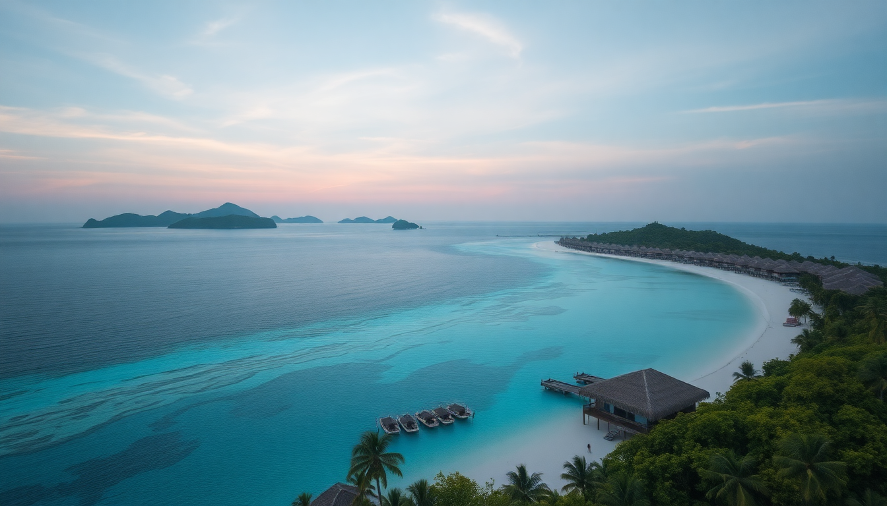

Best Beaches in Maldives: Top Islands for Overwater Bungalows

I landed in Male thinking every island would look like the postcards. Turns out, the reality is better—if you pick the right atoll. Overwater bungalows are everywhere, but the beach quality, marine life, and price vary wildly. After hopping between North Male, Ari, and Baa atolls, here’s what actually matters when booking.
Which atoll has the best overwater bungalows for beach quality?
North Male Atoll has the softest, whitest sand I walked on, but it’s also the most developed. Resorts like Anantara Veli Maldives and Naladhu Private Island sit on tiny islands with powdery beaches that don’t have coral rubble. The trade-off: house reefs are weaker here because of more boat traffic. If your priority is lounging on sand that feels like flour, North Male wins.
Ari Atoll’s beaches are slightly coarser—still beautiful—but the house reefs are far better. Constance Moofushi has a long sandbank that connects to a shallow lagoon at low tide, perfect for wading. Lily Beach Resort has a stretch of beach on the ocean side that’s consistently cleaned by staff, so no seaweed buildup. For a balance of sand and swim-out snorkeling, Ari is my pick.
Baa Atoll (UNESCO Biosphere Reserve) has beaches that vary island to island. Amilla Fushi has a massive beachfront with deeper sand, but Dusit Thani Maldives has a narrower strip. The real draw here is the marine life, not the sand texture.
What is the best way to reach the overwater bungalow islands?
You fly into Velana International Airport on Male. From there, every resort handles transfers differently.
- Speedboat: Common for North Male Atoll resorts. Anantara Veli is 35 minutes by speedboat. Cost is around $300–$400 round trip. Smooth ride, but can be bumpy in monsoon season (June–November).
- Seaplane: Required for most Ari Atoll and Baa Atoll resorts. Constance Moofushi is a 25-minute seaplane flight from Male. You’ll pay $500–$700 round trip. Seaplanes only operate daylight hours, so late arrivals mean an overnight in Male—The Somerset Hotel near the airport is a practical stopover.
- Domestic flight + speedboat: For far-flung resorts like Amilla Fushi, you take a 30-minute domestic flight to Dharavandhoo Airport on Baa Atoll, then a 10-minute speedboat. Saves money compared to seaplane, but adds a layover.
I’d recommend speedboat for North Male, seaplane for Ari if budget allows—the aerial view of the atolls is worth the extra cash.
Which islands have the best snorkeling from overwater bungalows?
Not all overwater bungalows give you direct reef access. Some sit over sand flats where you see nothing but your own shadow. Here’s where the snorkeling actually delivers.
- North Male Atoll: Naladhu Private Island has a small house reef with decent parrotfish and occasional turtles. But Anantara Veli’s lagoon is deep enough for rays. Overall, North Male is average for snorkeling.
- Ari Atoll: Best in this list. Lily Beach Resort has a house reef that starts right under the overwater villas—I saw reef sharks, eagle rays, and a moray eel within 10 meters of my deck. Constance Moofushi has a channel between two islands where currents bring in larger fish like napoleon wrasse.
- Baa Atoll: Dusit Thani Maldives has a famous house reef called Dusit Thani Reef—it’s a protected site with soft corals and schools of batfish. Amilla Fushi has a reef on the eastern side, but you need to swim 50 meters out. During manta season (May–November), Hanifaru Bay is a 20-minute boat ride from most Baa resorts—best manta ray cleaning station in the Maldives.
If snorkeling is your priority, pick Ari or Baa. If you just want to float in turquoise water, North Male is fine.
When is the best time to visit for overwater bungalows?
Dry season (December–April) is the obvious answer—blue skies, calm seas, and visibility up to 30 meters. But it’s also the most expensive. I visited in late April, which is the shoulder season, and got 30% lower rates at Constance Moofushi with only two days of rain.
- December–April: Peak season. Resorts like Lily Beach and Anantara Veli book out months in advance. Expect $800–$1,500+ per night for overwater bungalows.
- May–November: Wet season. Rain usually comes in short bursts (30–60 minutes) and then clears. House reef visibility drops to 10–15 meters, but manta rays and whale sharks are more common in Baa Atoll. Dusit Thani often has “monsoon deals” cutting rates by 40%.
- June–August: Strongest winds in North Male. Speedboat rides can be nauseating. Stick to Ari or Baa for calmer seas.
My advice: go in May or September. You risk a few rainy afternoons, but you’ll have the overwater deck to yourself and save enough for a second trip.
How do I choose between all-inclusive and half-board at these resorts?
Every resort in this list offers overwater bungalows with meal plans, but they’re not equal.
- All-inclusive (AI): Worth it at Constance Moofushi and Lily Beach because their AI includes premium drinks, snorkeling gear, and excursions. At Lily Beach, the AI covers a sunset fishing trip and a dolphin cruise—that alone saves $200 per person.
- Half-board (HB): Works if you’re at Amilla Fushi or Naladhu Private Island, where the food is exceptional but you might want to eat at the resort’s fine-dining restaurant (like The Feeling at Amilla) rather than the buffet. HB usually covers breakfast and dinner at the main restaurant, but not the specialty venues.
- Full-board (FB): Rarely worth it unless you don’t drink alcohol. Most resorts serve filtered water and basic juices anyway.
I did AI at Constance Moofushi and HB at Anantara Veli. AI made sense in Ari because I snorkeled hard and wanted beers without watching the bill. HB in North Male worked because we ate at Sea.Fire.Salt. (the resort’s steakhouse) a la carte—better food, but $120 per person.
What are the hidden costs I should expect?
Overwater bungalows look all-inclusive on paper, but they’re not.
- Seaplane transfers: $500–$700 per person round trip. Not included in most room rates. Lily Beach charges $650 per adult.
- Green tax: $6 per person per night. Mandatory, paid at checkout.
- Excursions: Manta snorkeling at Hanifaru Bay costs $150–$200 per person from Baa Atoll resorts. A private sandbank picnic from Constance Moofushi is $250.
- Tips: Not expected, but appreciated. I tipped $5–$10 per day to the housekeeping and butler staff.
- Wi-Fi: Free at all resorts I visited, but speeds vary. Amilla Fushi had reliable 20 Mbps; Naladhu was slower at 5 Mbps.
Budget an extra $300–$500 per person for transfers and excursions on top of the room rate.
FAQ
Can I visit the Maldives on a budget and still stay in an overwater bungalow? Yes, but you’ll need to look at guesthouses on local islands like Maafushi (South Male Atoll) or Dhigurah (Ari Atoll). They offer overwater-style rooms for $150–$300 per night, but they’re not private resorts—you share the island with locals and other tourists. The beach quality is lower, and alcohol is banned on local islands (except in resort-only sections). For a true overwater bungalow experience, a resort in North Male or Ari is the way to go, starting around $500 per night in low season.
Do overwater bungalows have glass floors? Many do, but not all. Constance Moofushi and Lily Beach have glass panels in the living room floor. Naladhu Private Island does not—their overwater villas have a wooden deck with a ladder into the lagoon. Check the room description before booking if this matters to you.
Are overwater bungalows safe for children? Most resorts allow children, but the railings are often spaced wide enough for a toddler to slip through. Anantara Veli is adults-only (16+). Lily Beach has a kids’ club and childproofed overwater villas with higher railings. I’d recommend a beach villa for families with young kids—overwater bungalows are better for couples or older children who can swim.
Conclusion
- North Male Atoll has the best sand quality and easiest access from Male, but weaker snorkeling. Choose Anantara Veli or Naladhu for lounging.
- Ari Atoll offers the best balance of beach and house reef. Constance Moofushi and Lily Beach are my top picks for active travelers.
- Baa Atoll is for marine life lovers—Dusit Thani has a world-class reef, and Amilla Fushi has huge beachfront villas.
- Book shoulder season (May or September) for lower rates and fewer crowds, but pack for rain showers.
- Budget for transfers and excursions—they add 30–50% to the total trip cost.